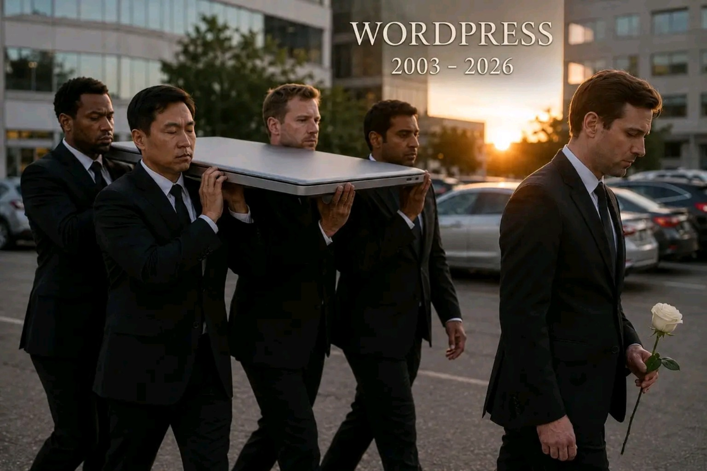

Ach, WordPress
Źródło: opublikowany post na Facebooku.

Ach, WordPress.
Ile cię trzeba cenić,
ten tylko się dowie,
kto nie robił backupu.
Byłem świeżo po studiach. Z gatunku tych, na które wszyscy idą, a potem rynek pracy patrzy na tysiące absolwentów i mówi: fajnie, tylko miejsc pracy nie dowieźliśmy.
To było jeszcze przed boomem na IT.
Na szczęście miałem już pierwszą poważną pracę. 750 zł za miesiąc. Ówczesna minimalna krajowa. Człowiek sukcesu, tylko jeszcze bez sukcesu.
Miałem też czas na rozwój osobisty, chociaż nikt tego wtedy tak nie nazywał. Po prostu człowiek siedział po godzinach, coś klikał, coś czytał, coś instalował i udawał przed sobą, że to ma kierunek.
I wtedy odkryłem WordPressa.
Co to był za szok. Znaczy, słyszałem o nim wcześniej, ale nie miałem czasu zgłębić tematu. Wcześniej coś tam tworzyłem w HTML-u, więc kiedy zobaczyłem pierwsze demo, to miałem wrażenie, że ktoś właśnie pokazał mi panel sterowania internetem.
Ja pierdziu.
Ile ja templatów przejrzałem.
Oczywiście darmowych, bo jak już wspomniałem, zarabiałem grubą najniższą krajową. Jestem chyba jednym z niewielu osobników mojej płci, który w tamtym czasie oglądał podglądy szablonów do stron internetowych zamiast stron internetowych.
W końcu wybrałem szablon i zrobiłem swoją pierwszą stronę w WordPressie. Oczywiście najpierw musiałem opanować sztukę znalezienia darmowego hostingu, instalacji bazy danych oraz procedurę: jak to nie pamiętam hasła, przecież instalowałem to wczoraj, na pewno się nie mylę.
Spojler: myliłem się.
Ale udało się. Nie rozróżniałem jeszcze wpisu blogowego od strony, ale formularz kontaktowy był. Prawdopodobnie działał. A jeśli coś ma formularz kontaktowy, to wiadomo: projekt profesjonalny.
Byłem dumny.
Całkiem niedawno poczułem się dokładnie tak samo, gdy zrobiłem pierwszą stronę za pomocą AI. Jest piękna i działa. Nie wiem, jaki jest stack technologiczny, ale jest git, bo AI tak powiedziało.
I wtedy zobaczyłem tego mema.
WordPress.
2003–2026.
I nagle powiązałem fakty.
Podobno pół internetu stoi na WordPressie. Te strony pewnie nie znikną od razu. One zostaną przykryte przez miliard pięćset nowych stron wygenerowanych za darmo przez ludzi, którzy nie potrafią zapamiętać hasła do bazy danych.
Technologia się zmieniła.
Człowiek został ten sam.